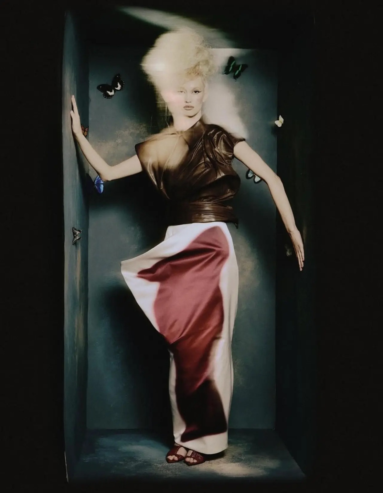
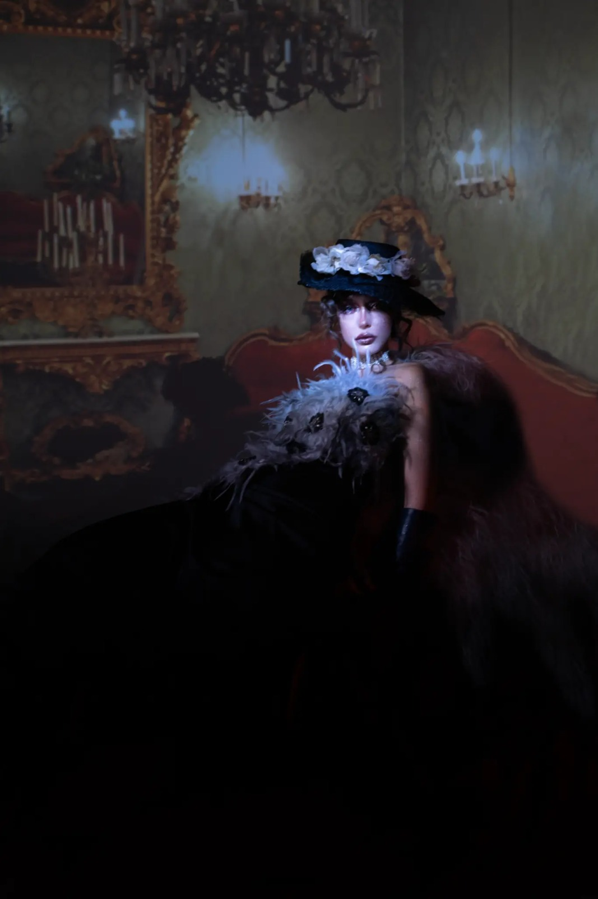
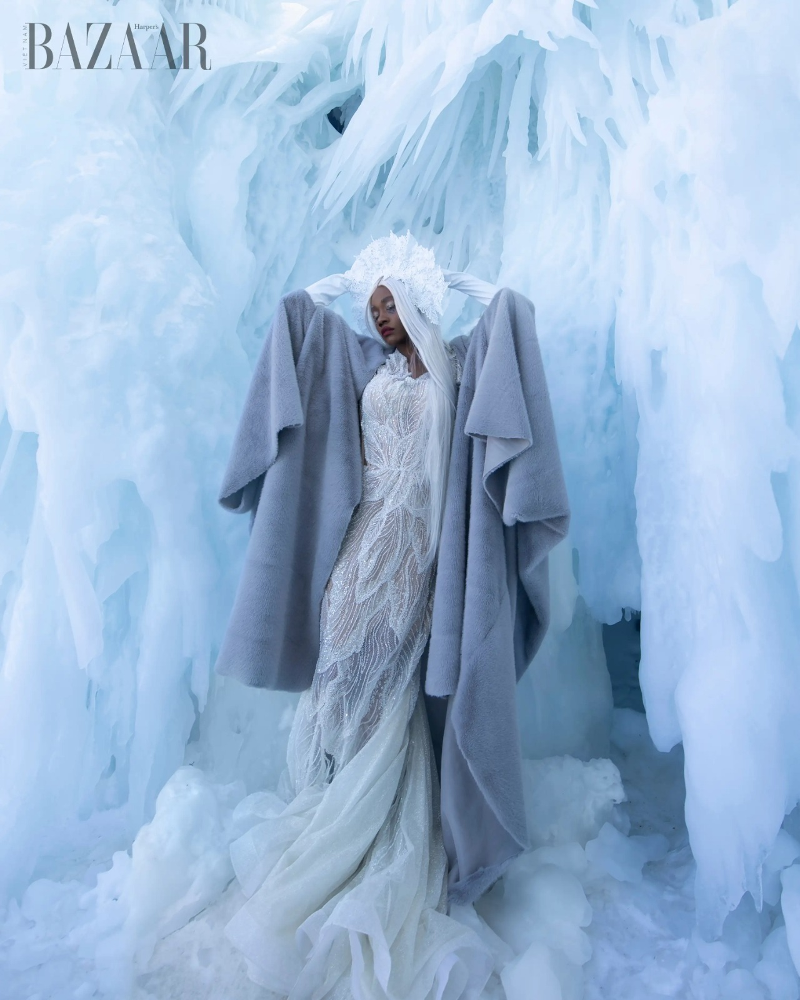
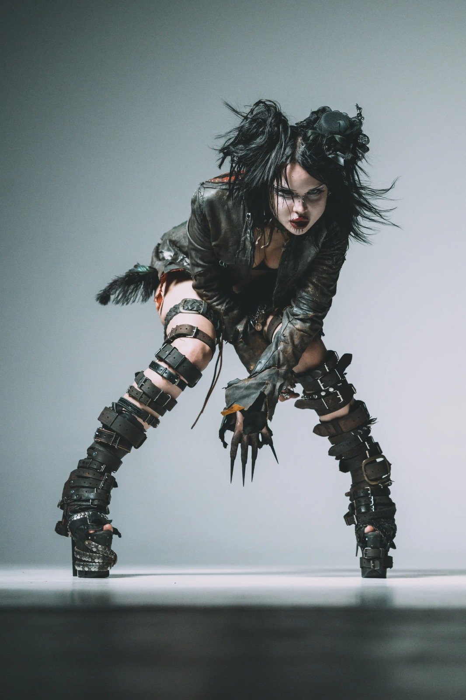
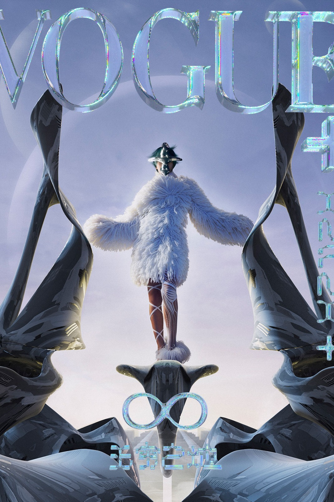

Herbario humano
Editorial · 2025
Carrusel de cinco fotografías. Usa las flechas izquierda y derecha del teclado para cambiar de imagen. También puedes seleccionar las flechas visibles.





Fotografía editorial · Madrid / En cualquier lugar
Soy Eter N-0, fotógrafo de moda editorial. Creo imágenes donde el cuerpo, el vestuario y la naturaleza se encuentran, a veces de forma literal y otras como una emoción que permanece.
Explorar trabajosArchivo reciente · 2024—2026
Una colección de encuentros
entre moda y paisaje.
Editorial · 2025
Moda · 2025
Estudio personal · 2024
Editorial · 2024
Desliza para descubrir
Una mirada en movimiento
Soy Eter, fotógrafo y observador de todo lo que insiste en crecer.
Trabajo entre la moda y el mundo natural. Me interesan las formas en que una prenda puede recordar una semilla, cómo el cuerpo encuentra su lugar en el paisaje y qué sucede cuando dejamos que la imagen respire.
Hablemos de una ideaUn camino por capas
De los primeros cuadernos de campo a las páginas impresas: una práctica construida con paciencia, colaboración y curiosidad.
Serie editorial independiente sobre tejidos botánicos y nuevos paisajes.
Editorial de moda publicada en Sur / Revista, número de primavera.
Investigación visual y dirección de imagen en el entorno de Sierra de Gredos.
Inicio del archivo fotográfico dedicado al cuerpo y su relación con la naturaleza.
Próximamente · Otoño 2026
Un nuevo ensayo fotográfico sobre los materiales que vienen de la tierra y las historias que llevamos sobre la piel.
Recibir novedades